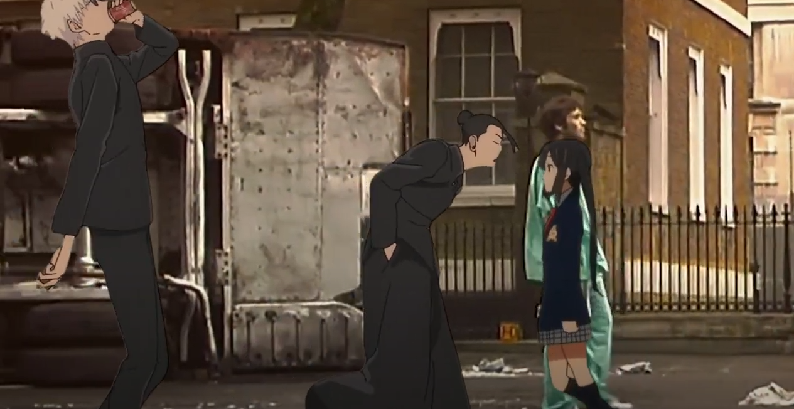
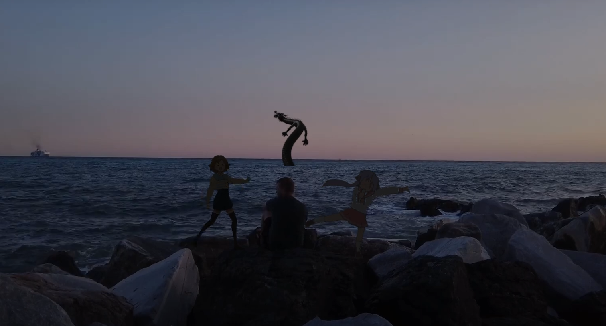

2024 Fall
Tool: Adobe Aftereffects
This is a demonstration of my video editing abilities using found footage. All samples used in this video were found on YouTube. The audio was cut and edited by me. This video puts together a narrative using unrelated footage and greenscreens to tell a story of a lonely man who uses anime as an outlet to his loneliness.
"Keeping sane with my imaginary friends."
 